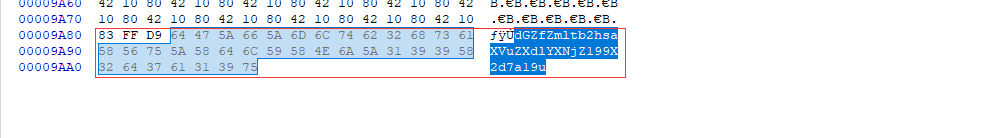
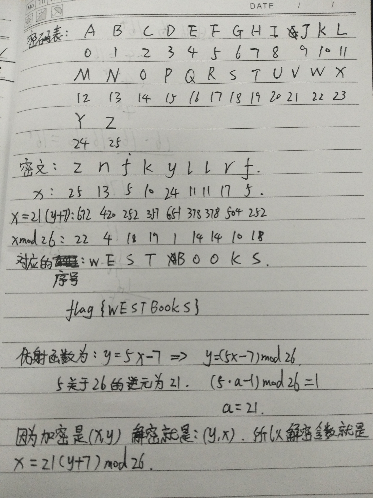

2018-10-17
这次题解我就只放直接正确的步骤。不多说那些绕来绕去的步骤。后面有些题大部分都是实验吧的原题，网上wp一堆一堆的，我就不细细说了。
1.听说睁大眼睛就能找到flagO.O
下载文件，发现是个GIF（64格，实验吧原题），已经损坏了打不开，用winhex修复一下文件头。
GIF- 文件头标识 (6 bytes) 47 49 46 38 39 61
然后再用GIF分帧查看一下，然后根据每帧图片上小黄人的位置对应表格的位置
根据每帧图片小黄人的位置对应base64表得到字符串： Q1RGe2FiY19kZWZfZ30
然后尾部加上==解一下base64就出来了flag
flag: CTF{abc_def_g}(可以提交)
引用自：
博客：https://blog.csdn.net/hotwind66/article/details/52369497
2.A记录
**题目：他在看什么视频，好像很好看，不知道是什么网站的。
还好我截取了他的数据包，找呀找。
答案：CTF{网站}**（实验吧原题）
打开文件发现是个shipin的数据包分析发现文件是断了的。
而且我们看到了TP-Link，很显然是个wifi的数据包，肯定是加密了的。那么需要我们进kali里面使用Aircrack-ng进行一下爆破（前提得去网上下载一个worldlist的字典）
命令：aircrack-ng -w 字典文件 .cap数据包 跑出密码为:88888888
这里看到wifi的名称（ESSID）为0719，以WPA的加密方式，这种方式是不怎么安全的一种加密方式。
然后解开数据包，这回使用airdecap这个工具
命令：airdecap-ng shipin.cap -e 0719 -p 88888888（-e是第一步得到的ESSID，-p是第二步得到无线的密码）
这时候桌面会出现另外一个分离出来的shipin-dec.cap数据包，我们用wireshark打开它
终端输入wireshark就可以唤出
这里说一下A记录：DNS解析记录
我们需要过滤一下DNS的包，然后根据题目来看答案是个网站，而且跟视频有关只有这三个，最后套上格式提交试验，flag为ctf{push.m.youku.com}
flag: ctf{push.m.youku.com}
3.神秘的数字
打开后看到题目为：
总共有2 * k个人报数，前面k个是男人，后面k个是女人，从第一个男人开始报数，报道m的人要出列。然后从出列的下一个人继续从头开始报数，报道m的人出列，以此类推。当k = 12时，问m为何值时，女人全部出列之前不会有男人出列。(实验吧原题)
附上wp链接：https://blog.csdn.net/u010379510/article/details/50912663
脚本为：
1 |
|
flag: CTF{1358657}
4.相机中的兔子
打开后，没发现图片当中有什么。所以直接使用winhex(16进制编辑器)看一下。
发现尾部有base64的字符，但这个解密后什么都不是，只能去尝试AES和DES
这里看到了个Rabbit解密，兔子的英文=Rabbit（脑洞），所以解密后得到flag

flag: flag{is a interesting photo}
5.4P?
很骚的题目。打开题目后，发现了一个坏的压缩包
使用winhex打开后，发现了jpg格式的文件头
果断改后缀为.jpg
打开后发现
发现没什么东西，继续回到winhex看一下文件尾，发现base64字符

解密一下
1 | import base64 |
结果为：tf_fimohliuneweascg_}_g{k_n
很显然是栅栏密码，然后解密一下
栅栏解密
根据题目可得，栅栏在第4位的时候会出现flag
结果为：the_flag_is{fucking_me_now}
flag: flag{fucking_me_now}
6.咦！这个文件怎么打不开
跟之前一样，还是个gif文件打不开，果断还是进去winhex看一下，修复一下文件头，跟第一题前面一样

发现了Base64字符，进行图片分帧，然后把文字敲出来进行Base64解密就出flag了。
结果为: Q1RGe3dhbmdfYmFvX3FpYW5nX2lzX3NhZH0=
flag：CTF{wang_bao_qiang_is_sad}
7.对方不想跟你说话
打开文件看到了个图片，里面有个雪球，雪球上有个二维码，但是直接扫不出来。需要我们用PS进行调整一下
调整色阶为90-120。这样就可以看到正常的二维码
但还是扫描不出来，发现右半部分反色了。这时候需要将他恢复回来
然后QR扫描一下就可以了
flag： flag{&Y9kd6ou}
8.一个宝宝解不开
打开文件以后，发现了个二维码，扫描了一下说一个宝宝解不开。这时候发现没什么用。
使用foremost命令进行分离一下，看到分离后有个压缩包
打开后需要密码。这个时候需要脑洞一下，既然一个宝宝解不开，那么两个就可以了。所以最后的解压密码为：babybaby
解压完毕后，会看到有个flag的文件，没有后缀名。我们用winhex打开看到是png的文件头
所以我们要修改文件后缀为.png。打开发现是个二维码，需要我们进行反色，但是我们如果讲QR的纠错调到30%就可以直接扫描出来
扫描结果：
flag: flag{ThIs_Is_QR_Code}
这个不知道是不是最后的flag格式有问题，怎么都提交不上。
9.魔幻的声音
下载下来以后发现是个声音。然后题目提示：摩斯密码。
使用Audacity工具将文件打开，看到音频后发现有一段不对劲。

然后放大后，根据莫斯密码的格式。
看最顶上那行，尖的是 “·” 长的是 “-”，然后下面的比较长一些的是“/”。
这个时候就可以得出密文为：━ ━/━ ━ ━/．━ ．/．．．/．/．．/．．．/．．━．/．．━/━．(这种格式肯定是出不来的，把里面的横和点替换成减号和点)
摩斯密码解密
明文为：MORSEISFUN
flag：flag{MORSEISFUN}
10.认真你就输了
根据题目，不能认真，所以先打开winhex看看这个文件。发现是PK的文件头，改后缀为zip看一下。
然后解压后在文件夹里面慢慢找，会找到一个名为flag.txt的文件。打开后就可以看到flag
这道题因为flag符号比较复杂，博客解析不了我就不放了。
11. 藏藏藏
打开后，可以看到一个名为jpg的文件。使用foremost命令分离一下可以看到一个压缩包
解压后可以看到一个名为福利的文档，打开后就可以看到一个二维码。
扫描一下可以看到flag：
flag: flag{you are the best!}
12.答案在哪？（后续补充）
打开后看到题目为：有一天老王得到一张图片和一串数字，数字为：1,5,13,19,21,23,25,33,34,41。但找不到答案，你能帮助他吗？格式：flag{xxxxx}
然后使用winhex(16进制编辑器)看到后面有段文字。
zmxhz3tra2tfmjm0a2frzmuxm19tamluzwlya2xhzn0=（base64字符）
但是解密不出东西
很显然，base64字符不是最正确的flag编码以后的base64字符，需要修改。
很显然要根据上面的数字的位置对应的字符改为大写。
最后改完的字符为：ZmxhZ3tra2tfMjm0a2FrZmUxM19tamluZWlya2xhZn0=
base64以后发现：flag{kkk_29�kakfe13_mjineirklaf}
很显然提交不上。
13. 内有玄机
我们发现打开后图片一部分被遮住了，使用神器Stegsolve.jar可以看到比较清晰些点的二维码
需要我们使用PS调整下色彩，然后就可以得到正常的二维码。（因为本人PS技术太烂，没办法恢复到黑白的样子，所以只能尽量清楚些）
然后使用QR扫描：
发现了一段Base64字的符，然后转换一下就可以得到flag。
flag: flag{enj0oy_09i0t}
14.java?
打开文件后发现result.txt当中有一堆不知道是什么的编码，但是看到最后发现 == ，果断base64尝试一下。
转化后看到：
文章当中获取到了一个密文和密钥还有加密方式
加密方式：AES
密文：8abdefe5baa299e066ff4ce87468bf9c
密钥：bluedon12345678a（必须带上a不然解不出来）
但是很显然，我们这样直接解密，解不出来。因为密文有问题，需要我们进行处理一下。
1 | from Crypto.Cipher import * |
最后结果为：C01grat21at
flag ：flag{C01grat21at}
15.你真的懂逆向吗
这个题目打开以后，会看到个output.txt。打开解密一下那个摩斯密码就行了
这个题目作为唯一的逆向题目，也是困住了我们学校多位学长。所以这个题目我打算仔细分析一下。
打开程序以后，会看到一个可执行的.exe、output.txt、result.txt、password.txt
先运行一下你会发现，他提示你密码password错误。
然后进行静态分析看一下这个程序他的反汇编后的源代码，第一步先找程序入口点main函数
然后我们果断进入_main_0这个函数看看。
很混乱，不知道跳到哪里了，我们果断反汇编F5一下看看。
通过对代码的解读，我们知道了他的验证过程是什么样子的。继续往下看，你会发现他在提示正确的过程中，会继续执行两个函数。
sub_401019()和sub_401014()我们就进如刚刚的流程图里面看看他最后会跳转到那个函数，然后再进行反汇编。
第一个sub_401019跳转到了sub_401140这个函数，第二个sub_401014跳转到了sub_401190这个函数。

那么我们分别来看下这最后的两端函数反汇编以后的代码。
第一段，发现什么特殊的地方，就是打印了一段文字
第二段
这段就比较有用了，是我们的核心代码，那我们来分析一下他。
可以知道的是，这段程序里面result2.txt决定了最后output.txt的东西。
那么基本上，咱们的这个程序的核心基本上了解了。但是发现，前面的password的验证只不过起到了个开关的作用。真正决定output.txt的是什么的，确是那个result2.txt里面的内容。但是这些都给好了，说明最后的output.txt里面的内容就是我们的flag。摩斯密码解密一下然后套上flag{}就OK了。
flag：flag{Y0U2R1GHT}
17.当铺密码
题目：hint：解密
静静收到她干爹留下的一张银行卡和一个字条：这里面有十万块钱，密码在这里（由羊羊王夫井），拿到钱赶紧滚蛋，拿不到钱还活着干嘛。
静静一脸懵逼的站在冷风中，谁能帮帮可爱的静静~
提交格式为flag{XXXXXX， XXXXXX为解密出来的字符
这里看到题目以后，可以知道，银行卡密码为199678.
所以最后的flag{199678}
flag: flag{199678}
19.位移编码
打开后发现是一堆加密过的字符，不知道是干什么的。但是说到位移，第一个想到的就是凯撒了，所以先凯撒一下
发现暴力凯撒后也没什么东西。那么就用简单替换密码解密试一下(解密习惯语言要选成英语)
简单替换密码原理了解
输入进去密文以后点击break cipher就成功跑出了密码表和明文

明文中有一段为：YOUR FLAG IS ‘LOVE BEGETS LOVE’, IN LOWERCASE, WITH UNDERSCORES INSTEAD OF SPACES, SURROUNDED BY THE USUAL ‘FLAG’ TAG AND CURLY BRACES. ENJOY.
翻译过来就是：你的标志是“爱生爱”，小写，用下划线代替空格，周围是通常的“标志”标签和花括号。享受。
根据翻译我们可以得到flag
flag：flag{love_begets_love}
20. 数学很重要
题目：密文znfkyllrf是用仿射函数y=5x-7加密得到的，试对其解密。格式：flag{XXXX}
这个题目的关键就是得算出5的逆元以后得出最终的那个y=21(x+7)的表达式才行。
这里可能会问，为什么我的表达式是y=5x-7你的变成了x=21(y+7)了。因为解密函数是D(x)=a−1(x−b)(modm)
对于这个函数来说，我们的b的值是-7代入后负负得正就变成了+7了。
这个如果用手算也是可以算出来的
方法一：用手算
这里我的A是当时当成了A-1=21.顺手写错了。

方法二：跑代码
1 | #coding=utf-8 |
flag：flag{WESTBOOKS}
21.余音绕梁Canon
根据题目提示：MP3Stego,很显然，这是个mp3的隐写。但是mp3隐写需要密码才能分离。所以这里的密码就是Canon。
MP3Stego命令：解密工具(MP3stegoDecode.exe) -X是获取隐藏的东西 -P后面写密码
然后打开文件夹下刚刚解密出来的music.mp3.txt文件后看到了一串密码，这个就是解压zip.zip的密码。
解压密码：pqiem*zoei$%h
解压后发现是一堆字符
使用base64解密以后，仔细看就能看到flag
flag: CTF{WONVPAOAIUWNVPAOINE}
22.一堆字符
一串16进制的字符，进行hex编码一下就OK
1 | str = "666c61677b68656c6c6f5f776f726c647d".decode('hex') |
flag: flag{hello_world}
23.一话不说扔你一个压缩包
打开后看到rar的压缩包名为4位数字，直接上RAR爆破工具就OK
解压是个图片，直接用winhex打开往下拉一下就可以看到flag
flag: flag{Wadf_123}
25.仔细发现
打开文档以后，发现是一堆字母组成的文章。看提示说培根密码，但是按照26字符分2组定为AB的方法不行了。所以看题目说要让我们仔细看，字体放大后发现：
发现字体的粗细不一样，然后把加粗过的字母定为A，普通的字母定为B（去掉标点符号以后再弄）
得出的结果为：
BAABBAABBBAABAAAABABABABBAAAAAAABBAABAAABAABAAAAAABAABABAABBBAAABAABAAAABAABAABBAAABAAAAAABAAABABBABAAAAAABBAAAABAAAAABBAAABBAABAABAAAAABAAABAAABAABAAAAA（5个为一位分开，最后三个多出来的A去掉就行。）
解密后的明文：the flag is a street car named deqire
最后那句话去掉空格套上格式就是flag了。
flag: flag{astreetcarnameddeqire}
26.黑客的文件
这个题目我就不分析数据包了，直接用foremost命令分离一下flag就出来了
flag：flag{ThIs_Is_sO_1337}
28.别被迷惑了
打开flag.xls发现被加密了，结合题目提示说flag在excel表格里面，用notepad++打开看一下，然后搜索flag就可以找到flag了。

flag：flag{office_easy_cracked}
29.Paint&Scan
打开以后发现很多坐标，很显然需要根据坐标绘图，出来肯定是张二维码。
首先我们需要下载一个命令行的画图工具，叫做gnuplot。
下载地址
但是我们的坐标还不会被工具识别，需要我们进行处理一下才可以。（得把括号去掉，逗号换成空格。）
然后将它保存在桌面上，并且命名为1.txt(这样简单的命名与存放可以省去处理错误的麻烦)
然后我们开始绘图，命令：plot 你的坐标文件地址

flag: CTF{simplectf_QR_code}
30.一份来自外太空的文件
实验吧的原题，之前看了pcat大师傅的wp，其中又get到了一个使用Linux挂载的方法。
进入linux（我的是kali），先使用flie命令看看是什么文件，然后使用挂载命令将SOS文件挂载到我们指定的文件夹里面去。
首先我们使用命令:mkdir ctf30创建一个文件夹。
然后使用命令：mount sos.null ctf30
(前提你得cd到sos.null和ctf30所在的同一个目录下，这样你才不用指定路径，不然sos.null和ctf30前面都要加上他们的绝对路径才可以)
然后我们打开ctf30就可以看到sos挂载以后的文件：
之后我们打开每一个都可以看到有内容，把他们全部读出来然后拼接在一起就会出现Flag了。
有的人会出现乱码，那是因为文字是被压缩了的，需要我们解压一下就好。
1 | import gzip |
最后结果为：I’m from Black Eye Galaxy,Our spaceship broke down when we passed Mars.We need your help and we are available at any terminal.The key to contact us is CTF{131Ack_3Y3_gA1AxY}.Please contact us as soon as possible.we need your help desperately.
flag： CTF{131Ack_3Y3_gA1AxY}
31. WTF?
打开文件，不知道是个什么编码过的字符，看到最后有两个==，尝试了下base64
1 | import base64 |
然后发现全是一堆0和1组成的字符。发现不算是二进制。仔细看发现是二维码。
0为白，1为黑。然后写个脚本画一下就可以了
1 | from PIL import Image |
最后得出：
扫描一下发现flag：
flag：flag{QR_Code_666_!!_?}
32.功夫秘籍
打开文件，发现是个坏的压缩包，然后用winhex打开后，发现是png的文件头，先不着急改后缀，从文件尾部分发现key。
然后对这段字符进行base64以后得到：T_ysK9_5rhk__uFMt}3El{nu@E
发现是栅栏密码，然后解密就OK
在偏移为3的时候发现flag
flag：flag{Kun9Fu_M@5tEr}
33.磁带
打开后，发现是一堆这样的字符o_组成的符号。
上面这串密文解密后，得到明文为：Beijing
所以我们将o改为1将_改为0进行二进制转ascii码的运算
1 | f = open("F:/Desktop/1.txt","r") #1.txt里面保存的我已经转化为二进制的密文 |
结果：
然后我们用同样的方法进行下面的转换：
按照题目要求，我们要套上simCTF{}的格式
flag: simCTF{Where there is a will,there is a way.}(提交不上)
34.好的习惯
实验吧原题。
首先解压源码以后，搜索my.cnf，在www\lampp\etc里面。打开就能找到Key

flag： flag{YouGotIt!@#$}
35.过生日
这个题目说是社交网络，很显然，让我们从网上找一个8位的生日字典，然后爆破数据包。
密码为：19971028
解压以后看图片属性可以找到flag
flag： flag{hi_my_fri3ndz}
36. 大千世界
这个题目很有考脑洞。首先题目说答案是动漫的小写字母，然后给了张图片，什么也看不出来，使用foremost命令可以分离出个压缩包。
然后我们解压后可以解压出一个rar的压缩包。但是需要密码，很难受。打开winhex看一下，发现这个是jpg的文件头？果断修改后缀看一下，发现是张龙珠倒过来的图片。

根据题目可知他的小写字母是答案，但是试了过后没有结果。这时候脑洞就来了，既然是倒着龙珠图片，那么答案也需要倒一下。
flag：flag{llabnogard}
37.有趣的文件
实验吧原题
打开funfile这个文件后，发现是一堆16进制的字符，很显然是7Z的文件头被反转了，看来后面的也应该一样，每2位都要前后进行一次反转
1 | #此脚本引用了实验吧有趣的文件pcat的wp里的脚本 |
运行一下就可以跑出来一个完好的7z文件。解压后会有一个阿狸的图片。
用winhex打开看到flag，但是需要base64解密一下才可以
结果为：CTFFUNNY_P1CTUR3
flag： flag{CTFFUNNY_P1CTUR3}
38.不是一般的凯撒
实验吧的原题
从某大佬的wp中得知打开后感觉像是凯撒，但跑不出来，所以可以尝试一下修改密码表，进行ASCII码表的凯撒解密
直接上脚本：
1 | #- * - coding:utf - 8 -*- |
从结果中看到了个类似于flag的字符
然后栅栏解密一下就OK
flag: flag{_Just_4_fun_0.0_}(不知为何，这道题还是提交不上)
39.古老的东西
打开以后我们可以看到密文如下
然后我们密文放到1.txt里面转换成ascii码看一下是什么
1 | f =open("F:/Desktop/1.txt","r") |
结果为：OCU{CFTELXOUYDECTNGAHOHRNFIENM}IOTA
但是这个还不是最后的flag，还需要解密一下
列置换：
根据CTF{}的格式排列，可以得出
3875624 因为第一位有可能是3或者6 第二位是8 第三位是7 第四位5 最后一位为4，然后中间的两位出来的无非就是两个flag。其中一个肯定是对的
flag： CTF{COULDYOUEXCHANGETHEINFORMATION}
40.一段奇怪的代码
打开题目后看到一个提示asp.encode(asp加密)
直接asp解密就OK
在线asp解密
然后将密文输入就可以得到明文：
flag： flag{VbSciptEncodE}
其他几道题没写，因为我太菜了，实在不会。。。。